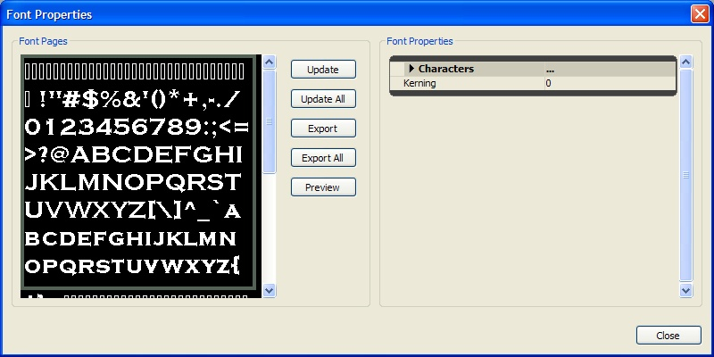

UDN
Search public documentation:
ImportingFontsCH
English Translation
日本語訳
한국어
Interested in the Unreal Engine?
Visit the Unreal Technology site.
Looking for jobs and company info?
Check out the Epic games site.
Questions about support via UDN?
Contact the UDN Staff
日本語訳
한국어
Interested in the Unreal Engine?
Visit the Unreal Technology site.
Looking for jobs and company info?
Check out the Epic games site.
Questions about support via UDN?
Contact the UDN Staff
创建并导入字体
概述
步骤 1 - 创建新资源
 在通用浏览器的视图面板中，右击并选择 新建从 TrueType 导入的字体 (New Font Imported From TrueType) 菜单选项，如上面的图片所示。这样操作产生了一个新的资源对话框如下所示。
在通用浏览器的视图面板中，右击并选择 新建从 TrueType 导入的字体 (New Font Imported From TrueType) 菜单选项，如上面的图片所示。这样操作产生了一个新的资源对话框如下所示。

步骤 2 - 选择您要导入的字体
步骤 3 - 设置字符集属性
| 属性 | 描述 |
| USize | 产生的贴图的宽度，以像素为单位 |
| VSize | 产生的贴图的高度，以像素为单位 |
| XPad | 在X 轴上字符间的间距大小，以像素为单位 |
| YPad | 在 Y 轴上字符间的间距大小，以像素为单位 |
| AntiAlias | 产生的贴图数据是否启用抗锯齿功能 |
| Chars | 用于指定为这种字体产生哪些字符。当您不需要产生所有字符时或者您希望控制使用哪些字符时，这个选项是有用的。 |
| Wildcard | 用于和路径协同工作。当从一个指定的目录中选择文件时指定要使用的模式 |
| Path | 用于指定字体的字符集中要包含的一个或多个文件。如果您正在为本地化文件产生一种字体并仅想使字体中仅包含所需要的字符，那么这项是有用的；然后您可以指定要使用的本地化文件，它仅产生所需要的字符 |
| Style | 指定每 1000 个像素中涂墨像素 (inked pixels) 的数量。正常情况为 400 ，粗体为 700 |
| Italic(斜体) | 创建的字体是否使用斜体 |
| Underline | 创建的字体是否可以启用下划线 |
| bCreatePrintableOnly(是否创建仅可以打印的字体) | 是否从字体中移除不可以打印的字符。把间隔保存为从字体中剥离的控制字符 |
| bUseSymbolCharSet(是否使用符号字符集) | 是否导入字体作为一个符号集合或者字符集合 |
| ExtendBox | 推动每个字符的贴图UV’s 的量，以像素为单位 |
通配符 (Wildcards)
通配符文本文件是那个包含着字符的文件，也是导入器要指向的东西，所以它读取内容并仅导入在文件中包含的字符，然而文件路径 (FilePath) 只是简单地指向文本文件 (wildcard) 所在的目录。 为了使用这个功能，字符文件及通配符应该是这样的：CharacterFilePath=C:\FileName\FileName CharacterFileWildcard=YourTextFile.txt在窗口中文本文件的实际路径应该是：
C:\FileName\FileName\YourTextFile.txt这里是导入及设置属性的一些步骤：
- 创建一个命名为
C:\FontPath的文件夹，并放置一个命名为FontChars.txt文本文件到这个文件夹中。 - 粘贴通配符文本到文件 FontChars.txt 中。
- 保存 FontChars.txt 文本文件为 UNICODE 格式（比如使用 Windows NotePad）。
- 打开UnrealEd，在通用浏览器中右击，选择 新建从 TrueType 中导入的字体 (New Font Imported from TrueType) 。
- 设置
FontName(字体名称)为类似于 Arial Unicode MS 的东西。 - 设置一下属性:
- 设置
bCreatePrintableOnly(是否进创建可打印的字体)为 true 。 - 设置
CharsFilePath(字符路径)为 C:\FontPath - 设置
CharsFilePath(字符路径)为 C:\FontPath - 设置
TexturePageMaxHeight= # - 设置
TexturePageWidth= # - 设置任何填充/扩展盒的值
- 设置
- 选择字体+尺寸
- 导入
bCreatePrintableOnly 标志及 filepath(文件路径) 和 wildcard(通配符)。您或许会经历由于没有合理地设置复选框而导致字符不能正常进行导入的问题。
注意 ： :除了通配符输入外，必须使用 Character File Path(字符文件路径)。文件路径不应该包含文件名，仅是文件的路径即可。同时也要确保您想导入的包含 UNICODE 字符的文本文件被保存为 UNICODE。文件应该有一个 0xfffe 头，否则它可能会默默地失败。目前还不支持保存为 UTF-8 格式的字体字符文件。
通配符举例
这里是一系列的各种各样的字符。在每行前面的空格是故意的。一个是正常的空格，一个是法语中的空格。 英语:
!"#$%&'()*+,-./0123456789:;<=>?@ABCDEFGHIJKLMNOPQRSTUVWXYZ[\]^_`abcdefghijklmnopqrstuvwxyz{|}~
扩展:
€„ˆ‹Œ‘’“”–—˜™›œ¡¢£¨©ª«®°²³´¹º»¿Àu193 AÂÃÄÅÆÇÈu201 EÊuc1Ëuc2Ìu205 IÎÏÑÒu211 OÔÕÖØÙu218 UÛÜuc1ßえ?âu227 aäu229 aæu231 cèéêë?îu239 iñ皑?ôu245 oöu248 oùúû?ýu221 Y¥?Ÿ…使用通配符可以保证您导入字体所支持的每一个字符。如果您在导入了上面的字体后仍然丢失了半角字符，那么它可能在 TTF 文件中不存在。
扩展盒 (Extendbox)
如果ExtendBox(扩展盒) 的数值非常的大，它将会导致描画额外的字符，或者如果您正在经历斜体字体被剪切，您可以使用它来进行修复。 ExtendBox(扩展盒) 和 Padding(间距) (X 或 Y)是不同的，间距基于您输入的数值来分隔在贴图表中的字符，然而 ExtendBox(扩展盒) 仅用于移动字符的 2D UV 坐标。
一般当使用 ExtendBox(扩展盒) 时您将会想增加一些间距，这样您便不会再使用 e 字符时仅描画半个 d 字符。
在某些情况下，您或许会注意到某些小写字母和类似于 - 的特殊字符总是上部靠近顶线(cap line)放置而不是放置在基线(baseline)上。在目前贴图上的字符位置是故意这样设计的，在游戏中将不会这样显示。它是当导入字体时对保存所有贴图用法的一个优化，并且仅存在于贴图本身。
关于字间距调整，您可以为字体设置一个默认的字距调整值，但不能在实际字体本身设置行间距。
在基于当前的导入在外形上调整贴图时一定要小心。如果您改变贴图 UV 将不会改变，结果可能会切断贴图甚至出现更多的问题。作为替换 ，重新导入字体并选中复选框 bEnableLegacyMode ，这样将会使用简单的基线来导入字符(就像先前在引擎中一样)。
字体属性

修改现有字体
一旦生成了字体页面，您便可以修改它们。有时候在字体产生过程中字符会扩展到已分配的空间之外或者增加一些偏离的像素。在这些情况下，美术工作者可以导出字体页面并在一个绘画程序中清除它们。请使用字体属性对话框来导出 和/或 导入字体页面。首先选中您要导出的字体页面。然后使用 Export(导出)按钮，您导航到要将字体页面导出到的文件目录。导出/导入的过程使用一个严格的命名规则，即： FontName_Page_#.tga 更新过程使用那个名称来决定替换哪个页面，所以请 不要 改变字体页面的文件名称。 Update(更新) 导入一个单独的文件来替换选中的字体页面。 Update All(更新所有) 选项扫描TGA文件所在目录来查找匹配命名规则的文件。这些文件将会被自动导入并替换现有的字体页面。 Export(导出) 选项将使用上面的命名规则导出选中的字体页面到一个TGA文件中。 Export All(导出所有) 按照上面描述的命名规则导出所有的字体页面到指定的目录中。字体预览
要查看字体在 UE3 中是如何显示的，请使用在字体属性对话框中的"Preview（预览）"按钮。这将会依次显示如下的预览对话框。这个对话框使用和在游戏中渲染字体一样的代码来渲染文本，允许您在不必运行游戏的情况下来检查间距问题。在一次本地化遍数过程中，这将会加速迭代时间。当您在编辑控制中输入文本时，它会在预览区域内进行描画。您可以改变文本的颜色及背景来验证字体在各种设置下都看上去很好。
行间距 (Linespacing)
您可以在 UI 组合风格 和/或 Text style(文本风格) 中来水平地及垂直地间隔您的字体。改变文本风格为"custom(自定义)"风格，并且在左中部区域有一个叫"Chars"的部分。您可以在那里编辑 Kerning(字间距)和行高。 另外，如果需要，您能够基于一个控件或一个场景来覆盖风格。在控件的属性中，在Components(组件) -> StringRenderComponent(开始渲染组件)、 StyleOverride(覆盖风格)下，选中在"Spacing Adjust(间距调整)"附近的复选框，然后您便可以修改这些文本域中的数值了。使用 Style Override(风格覆盖)仅会影响控件，并且将总是影响控件。东方语言字体(亚洲和阿拉伯)
- 选择新建从TrueType导入的字体 (New Font Imported From TrueType)
- 在新建字体 (New Font)对话框中，对 UI 贴图组 (UI Texture Group) 使用默认的设置的抗锯齿 (AntiAlias) 和 LOD 组 (LODGroup)。
22-39,127-514,654-819'对于字体交换，您将需要为您的亚洲字体创建另一个包： "Fonts_JPN"，"Fonts_KOR" 等等。在那个包的内部，字体名字需要 完全地 和您的主要字体包相匹配。当语言改为 Japanese(日语)时，它也应该改变默认的字体包。这里除了贴图包含在字体对象内以外的另一个主要关心的问题是要确保这两个包是一样的， 比如，如果您的字体命名为"Mainfont,"，包将按照以下进行设置：
Fonts.Mainfont Fonts_JPN.Mainfont Etc.当默认字体包变为 _JPN 包时，所有的风格将使用'Mainfont'包的风格而不是其它的包，反之对于西方字符集合也是一样的(在英语中将不会加载日文)。 字体的大小很大一部分依赖于在游戏中的 对话/文本 的多少及用户可以访问的字符集合的多少决定。使用上面提到的基于您的游戏文本的导入方法，根据是否有要求或允许用户输入或大量对话的计算机终端接口，字体的尺寸可以非常小或者非常大。 作为比较，战争机器 1 的 JPN(日语)字体包大约是 5.5 兆字节（最大的类型尺寸为 1-1.3 兆字节)。根据在您的多字体的等级，您或许可以远离它；但是在文件大小上就会稍微有点大。如果您对一种语言使用多字体 (Multifonts) 而对其它的外观上不同的语言不使用多字体，您可能会在不同版本间在视觉上经历一些奇怪的现象。 如果您得到了亚洲字体的授权，它们可能是以两种字体格式发布的-一种可能是带有@标记前缀的，另一种可能没有。带@标记的格式可能是您更倾向于导入的字体，并且这个标记将会使这种字体置于列表的顶部从而使他很容易地被选中。然而，@版本是用于垂直文本输出的。字符在一个方向上旋转了90度，因为实际文本在显示时在另一个方向上旋转了 90 度，从而使字体产生了以下排列结果：
L I K E T H I S从习俗上来讲，那是亚洲语言的本来的阅读方式- 从上到下（从右到左）。如果您需要的是从左到右的版本，那么如果您搜索没有@前缀的名称应该是很容易就可以找到的。
多字体 (MultiFonts)
ResTests 和 ResHeights 数组。这两个数组应该包含着同样的数值。每个 ResTests 元素是最近的垂直显示分辨率，在那里将会使用相应的 ResHeights 高度的字符集合。
比如，导入一个支持 3 个分辨率的多字体 (MultiFont)：
ResTests[0] = 480.0 ResHeights[0] = 16 ResTests[1] = 720.0 ResHeights[1] = 24 ResTests[2] = 1080.0 ResHeights[2] = 32现在，当游戏以 1280x720 的分辨率运行时，引擎将自动使用烘焙的磅值为24的字符位图进行渲染。注意当我们决定使用哪个字形时仅看垂直屏幕分辨率。当然，您也可以使用一个对于您的贴图尺寸来说太大的磅值，您将可能会出现 内存/溢出 崩溃，所以一定要注意使用合理的磅值。
自定义字体
bEnableLegacyMode ，这样将会使用简单的基线来导入字符(就像先前在引擎中一样)。
控制台按钮作为字体
对于 Xbox，微软为它设计了一种 True Type 字体；通过一些参考您应该可以了解它们。在 Gears of War(战争机器) 中的 A/B/X/Y、触发器等等都是通过自定义制作按钮，并将其替换到导出的字体表格中来实现的。 您可以使用以下两种方法之一来着手做这件事... 不要改变任何坐标，并使您的美术作品适应您导入的字体的尺寸。这或许使少数的导入的尺寸恰好和指定尺寸的像素相匹配。一旦您从编辑器中导出了您的 TGA，在 PhotoShop 中打开它，并粗略地把图片放置在它们应该在的位置。有时候为了使美术作品和 UV 边界相匹配需要一些反复调整的过程。 为了找到坐标，您可以打开字体属性并查看字符列表。它是一系列的 ASCII 值，并且将 UV 赋给每个值。 下面是一个屏幕截图： 那里也有一些完整的显示带重音的字符的例子。
您可以输入 UV 到一个 PhotoShop Slice 中，来查看字符是否正确；如果不正确，您可以增加一个新的切片并根据前一个切片的偏移程度来尝试不同的 UV 设置。
战争机器中的控制器按钮字体几乎是不可改变的 UV 方法实现的。美术作品根据导入的 UV 的尺寸适应到贴图中。
您也可以制作完全的自定义字体，那将是更加棘手的，并且在一次新的导入后需要手动地 UV 到属性窗口中。战争机器中的字体"game over"是以这种方式创建的&ndash：字母（GoW logo 类型）是手动地在 PhotoShop 中创建的，然后在将其组合到贴图中。当新的字体导入后 UV 也改变了，所以它们可以正常地工作。在战争机器中，这是作为一个 55-75 磅的字体导入的，以便导入字体的高度有些和它要变为的美术作品的大小类似。
如果您确实修改了 UV，请确保保持高度一致，否则您将会陷入基线问题和令人头痛的事情中。当输入一个新的值后，请确认按下
那里也有一些完整的显示带重音的字符的例子。
您可以输入 UV 到一个 PhotoShop Slice 中，来查看字符是否正确；如果不正确，您可以增加一个新的切片并根据前一个切片的偏移程度来尝试不同的 UV 设置。
战争机器中的控制器按钮字体几乎是不可改变的 UV 方法实现的。美术作品根据导入的 UV 的尺寸适应到贴图中。
您也可以制作完全的自定义字体，那将是更加棘手的，并且在一次新的导入后需要手动地 UV 到属性窗口中。战争机器中的字体"game over"是以这种方式创建的&ndash：字母（GoW logo 类型）是手动地在 PhotoShop 中创建的，然后在将其组合到贴图中。当新的字体导入后 UV 也改变了，所以它们可以正常地工作。在战争机器中，这是作为一个 55-75 磅的字体导入的，以便导入字体的高度有些和它要变为的美术作品的大小类似。
如果您确实修改了 UV，请确保保持高度一致，否则您将会陷入基线问题和令人头痛的事情中。当输入一个新的值后，请确认按下 ENTER(回车) 键，然后点击另一个输入文本域来确保值已经 获得 。
在导入的过程中，增加 X 和 Y 方向的间距来给予您更多的空间来工作将是非常便捷的，但是一定要注意保持自福建的高度一致，否则将会出现字符被剪切的现象。